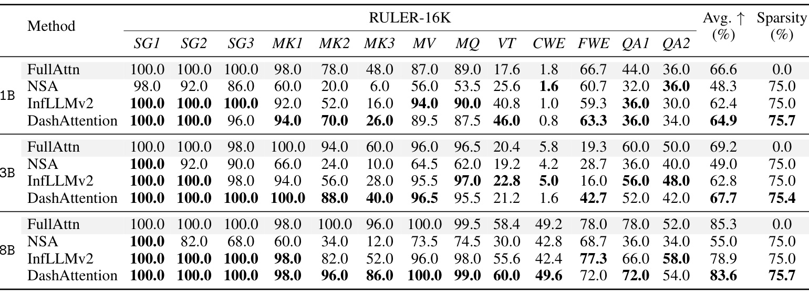
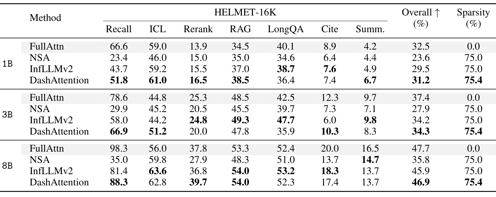
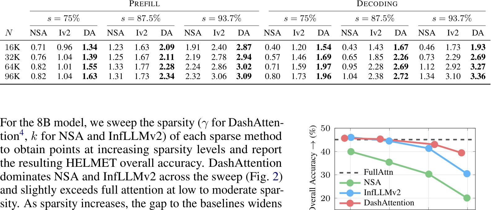
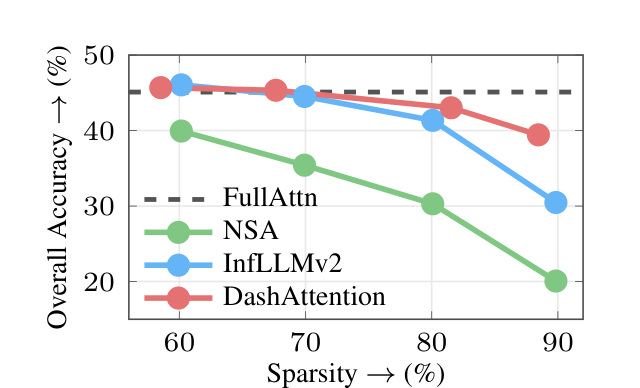

这里重新精读一篇最近公开的论文《DashAttention: Differentiable and Adaptive Sparse Hierarchical Attention》。中文可以叫《可微且自适应的稀疏层级注意力》。
论文链接：https://arxiv.org/abs/2605.18753 PDF：https://arxiv.org/pdf/2605.18753 代码/项目页：https://github.com/fasa-org/dash-attention 公开日期：2026-05-18，来源：arXiv cs.CL/cs.AI/cs.LG，arXiv ID：2605.18753。
0. 导读
DashAttention 是一篇长上下文 LLM attention efficiency 论文。它针对的是层级稀疏注意力中的固定 top-k block routing 问题。现有方法如 NSA、InfLLMv2 通常先用 coarse attention score 从 KV cache 中选 top-k blocks，再在这些 blocks 内做 token-level softmax。这个流程的问题有两个：top-k 假设每个 query 需要相同数量的 blocks，不能自适应；top-k 是离散选择，会切断 sparse stage 和 dense stage 之间的梯度。DashAttention 用 alpha-entmax 替代 top-k，让 routing 本身输出稀疏但可微的 block distribution，并把这个 distribution 作为第二阶段 softmax attention 的 prior。
这篇论文值得看，是因为它同时考虑了训练目标、理论性质和 GPU 实现。很多稀疏 attention 论文只讨论 pattern 或 benchmark，DashAttention 明确提出三阶段流程：Stage 0 local chunk summarization，Stage 1 entmax block routing，Stage 2 prior-induced sparse softmax。它还证明 softmax head aggregation 有 dispersive 问题，而 entmax aggregation 是 non-dispersive，并给出 Triton 实现，在长上下文 inference 中最高相对 FlashAttention-3 加速 3.3 倍。
1. 背景与问题
长上下文任务的成本主要来自 attention 的二次复杂度。全量 softmax attention 对每个 query 都看全部 key/value，效果强但成本高。稀疏 attention 的基本思想是只看相关 token 或相关 blocks。问题在于长上下文任务里“相关信息数量”不是固定的。有些 query 只需要一个局部事实，有些 query 需要跨文档聚合，有些 query 需要多个 evidence scattered across context。固定 top-k 对 easy query 浪费计算，对 hard query 又可能漏证据。
层级注意力试图降低成本：先把 KV 分块，计算 query 和 chunk summary 的粗粒度相关性，再选中部分 blocks 做细粒度 attention。NSA、InfLLMv2 属于这种思路。但 hard top-k 有两个缺陷。第一，support size 固定，不能根据 query 自适应。第二，top-k 不可微，训练时 coarse routing 很难从最终 token-level attention loss 中获得连续梯度。模型最终学到的 routing 可能和下游任务需求不完全对齐。
DashAttention 引入 alpha-entmax，试图同时解决稀疏和可微。entmax 和 softmax 一样是从 logits 到概率分布的变换，但它可以产生精确的 0，因此天然有 sparse support。和 top-k 不同，support size 由 logits 分布决定，可以随 query 变化；非零概率仍可微，能把 sparse stage 和 dense stage 连起来。
2. 核心方法
Stage 0 是 local chunk summarization。给定 KV cache，按 chunk size 切成 blocks，在每个 chunk 内做 local SDPA，得到 chunk summary。这个 summary 代表一个块的粗粒度信息，用于后续 routing。它的作用类似索引中的 block embedding，但由 attention 机制生成，能和模型训练结合。
Stage 1 是 entmax block routing。对每个 query/head，计算它与 chunk summaries 的 routing scores，然后使用 alpha-entmax 得到 block-level sparse distribution。alpha 控制稀疏程度，论文训练中逐渐把 alpha 从 1.25 增加到 1.5，推理时使用 alpha=1.5。和 top-k 相比，entmax 不需要预设每个 query 必须选 k 个 blocks。某些 query 可能只激活少量 blocks，某些 query 会激活更多 blocks。这就是 adaptive sparsity。
Stage 2 是 prior-induced sparse softmax。被 Stage 1 激活的 blocks 会进入 token-resolution attention，但第二阶段不是简单对选中 token 做普通 softmax，而是把 Stage 1 的 block probability 转成 prior 加到 token logits 中。这样 coarse routing 不只是决定“哪些 blocks 能看”，还影响 token-level probability 的先验分布。由于 Stage 1 的非零概率可微，整个 hierarchy 可以端到端训练。
理论部分提出 non-dispersive。论文认为 softmax head aggregation 会把概率质量扩散到更多位置，在层级稀疏场景中可能削弱长上下文检索能力；entmax head aggregation 则因为可以产生 sparse support，不会把质量分散到无关 blocks。这个性质和实际任务直觉一致：长上下文检索常常需要对少数证据保持尖锐注意，而不是在大量相似噪声中平均扩散。
实现上，DashAttention 提供 Triton kernel，包括 stage 0、stage 1、stage 2 三个 fused kernels，支持 prefill 和 incremental decoding，并使用 chunk-representation cache。它强调 GPU-aware，因为稀疏算法如果只在理论 FLOPs 上减少，但引入大量不规则索引、top-k materialization 或 kernel launch overhead，实际速度未必好。DashAttention 的 fused pass 和 bit-packed active-block mask 是速度优势的重要来源。
3. 图表解读

图 1 展示三阶段流程。左侧 Stage 0 从 token-level KV cache 生成 chunk summary；中间 Stage 1 对 query head 和 chunk summaries 做 entmax routing，得到 routing weights，其中部分 block 权重为 0；右侧 Stage 2 只在激活 blocks 内做 token-resolution sparse softmax，并用 routing prior 影响 token logits。这个图最重要的是说明 DashAttention 不是简单 block-sparse attention，而是 block routing 与 token attention 的可微耦合。

表 1 是 RULER 16K 结果。RULER 包含多类长上下文检索和推理任务，例如 single needle、多 key、多 value、variable tracking、common word extraction 等。8B 模型上，FullAttn 平均 85.3，DashAttention 在约 75.7% sparsity 下达到 83.6，明显高于 NSA 的 55.0 和 InfLLMv2 的 78.9。这个结果说明 DashAttention 在保留大部分长上下文能力的同时，能达到高稀疏度。尤其在 MK、MV、MQ 等多证据任务上，它比固定 sparse baseline 稳定。

表 2 是 HELMET 16K 结果，任务更贴近真实长上下文应用，包括 recall、ICL、rerank、RAG、LongQA、citation、summarization。8B 模型上，FullAttn overall 47.7，DashAttention 46.9，InfLLMv2 45.9，NSA 35.8。DashAttention 在 recall、ICL、rerank、RAG 等子项上接近 full attention，说明它不是只擅长合成 needle 检索，也适合 RAG 和 rerank 这类更接近应用的任务。

表 5 是速度表，相对 dense FlashAttention 的 wall-clock speedup。Prefill 阶段，DashAttention 在 16K、75% sparsity 下是 1.34 倍，在 96K、93.7% sparsity 下是 3.09 倍。Decoding 阶段，96K、93.7% sparsity 下达到 3.36 倍，高于 InfLLMv2 的 3.10。注意 NSA 在一些低稀疏或 decoding 设置下甚至低于 1，说明稀疏算法如果 top-k 或索引开销太大，实际会比 dense 更慢。DashAttention 的意义在于实际 kernel 速度也成立。

图 2 是 HELMET accuracy-sparsity Pareto frontier。随着 sparsity 提高，所有稀疏方法都会掉准确率，但 DashAttention 的曲线整体支配 NSA 和 InfLLMv2。在约 90% sparsity 时，DashAttention 保留 39.4% overall accuracy，比 InfLLMv2 高 9 个点，比 NSA 高 19 个点。这个图证明 adaptive support size 的价值：固定 top-k 方法在高稀疏时容易漏掉 hard query 需要的 blocks，而 entmax 能根据 score geometry 调整 support。
4. 实验与结果
实验从 MiniCPM-4 的 1B、3B、8B 模型出发，先用 full attention pretrained model，继续在 16K long-context data 上训练，再做短 SFT。对比方法包括 FullAttn、NSA、InfLLMv2。NSA 和 InfLLMv2 在训练和推理中保持 75% sparsity，DashAttention 通过 Stage 1 factor 匹配相近稀疏度。
RULER 和 HELMET 共同说明 DashAttention 在 75% 左右稀疏下接近 full attention，并显著强于 NSA。8B RULER 平均 83.6 vs FullAttn 85.3，HELMET 46.9 vs FullAttn 47.7。这个差距在实际长上下文系统里很有吸引力，因为 75% sparsity 代表大量 KV block 不进入 token-level attention。
通用任务表 3 很重要。8B 模型上，FullAttn 平均 59.5，DashAttention 59.4，NSA 59.2，InfLLMv2 59.1。它说明长上下文稀疏训练没有明显破坏短上下文通用能力。很多 attention 改造会在 general benchmark 上掉点，DashAttention 至少在这组任务上比较稳。
表 4 还展示了一个有趣现象：用 DashAttention 训练后，推理时切回 softmax full attention，RULER/HELMET 甚至高于原 FullAttn training model。作者称为 DA+FA。这提示 DashAttention 的训练可能带来某种 regularization 或长上下文结构学习收益。但这个结论需要谨慎，因为训练和推理切换可能依赖具体模型和数据。
效率实验区分 prefill 和 decoding。Prefill 通常计算密集，decoding 更 memory-bound。DashAttention 在两者都快，说明它不只是理论减少 FLOPs，而是真正减少了 wall-clock。论文强调相比 InfLLMv2，它避免显式 top-k 和 per-query index materialization，在 Stage 2 用 bit-packed active-block mask 单 pass 处理，这是工程收益的关键。
5. 我的理解
DashAttention 的价值在于把稀疏 attention 从“固定预算检索”改成“可微自适应检索”。这和推荐系统里的召回很像：固定 top-k 召回对每个用户给一样的候选预算，但真实用户请求难度不同，有的 query 只需少量证据，有的 query 需要更多候选。DashAttention 在 attention 层面做了类似自适应预算分配。
对 RAG 系统，它提供了一个潜在方向：检索阶段可以召回较多文档，真正的 token-level attention 由模型在内部自适应选择。相比外部硬截断，这更细粒度；相比 full attention，又更省。对推荐长行为序列，它也可能有价值。用户历史可能有几千到几万条行为，不可能全量 attention；固定窗口容易漏掉长期兴趣；DashAttention 这类 block routing 能让模型按目标 item 或 query 找相关历史块。
可能被高估的是“可微”带来的实际训练收益。虽然理论上端到端可微更优，但工业推理通常最关心稳定、兼容和成本。DashAttention 要进入 vLLM、SGLang、TensorRT-LLM 等主流栈，还需要 kernel 维护、动态图支持、KV cache 管理和量化兼容。论文开源代码是好事，但从研究 kernel 到生产部署仍有距离。
6. 工程启发与复现建议
复现时不建议一开始训练完整 LLM。可以先用已有 long-context 小模型，替换某些层的 attention 做 continued pretraining。最小实验包括：固定 chunk size 64，Stage 0 生成 chunk summaries，Stage 1 用 alpha-entmax routing，Stage 2 对 active blocks 做 sparse softmax。先在 synthetic retrieval 数据上验证能否找回 needle，再跑 RULER 子集。
工程上要重点观察四个指标：有效 sparsity、accuracy、prefill speed、decoding speed。稀疏度不是越高越好，要画 Pareto curve。还要分别测 top-k 方法和 entmax 方法的 kernel 开销，因为很多 sparse attention 在 Python 或非融合实现里会被索引开销吞掉收益。DashAttention 的速度优势依赖 Triton fused kernels，复现时如果只用普通 PyTorch mask，结论可能完全不同。
如果用于推荐长序列，可以把用户行为按时间或语义分块，每块生成 summary，让 target query 对块做 entmax routing。需要验证的是：它是否能找回远期但相关的兴趣块，是否比 SIM/TWIN/MIMN 这类工业长序列方法更稳，是否能在在线延迟预算内运行。
7. 局限与风险
-
kernel 集成复杂。Triton 实现能证明速度，但生产推理栈需要处理多 batch、连续 batching、paged KV cache、量化 KV、张量并行等问题。
-
超参敏感。alpha、chunk size、Stage 1 factor、目标 sparsity 都会影响准确率和速度。不同模型、任务、上下文长度可能需要重新调。
-
高稀疏场景仍会丢证据。Pareto 图显示 DashAttention 高稀疏时更好，但不是无损。复杂多跳推理、代码检索、法律文档等任务可能对弱证据更敏感。
-
训练成本不低。要发挥可微 routing 的优势，需要 continued pretraining 或 finetuning；只在推理时替换 attention 未必稳定。
-
和其他 KV 优化的组合未验证充分。KV quantization、KV eviction、CPU offload、paged attention 与 DashAttention 可能互补，也可能相互干扰。
-
benchmark 覆盖有限。RULER 和 HELMET 很有价值，但真实企业 RAG、长会话 agent、推荐长历史还有不同分布，需要额外验证。
8. 后续跟进
-
跟进 GitHub
fasa-org/dash-attention，重点看 Triton kernels、chunk cache 和 vLLM/SGLang 适配计划。 -
对比 NSA、InfLLMv2、MInference、Quest、StreamingLLM 等长上下文稀疏或 KV cache 方法，确认 DashAttention 的优势边界。
-
在推荐系统长行为序列上做实验，把 block routing 用于 target-aware history retrieval，和 SIM、TWIN、HSTU 类方法比较。
-
观察 DA+FA 现象是否可复现。如果 DashAttention 训练后切回 full attention 也更强，说明它可能不仅是推理加速，还能作为长上下文训练 regularizer。